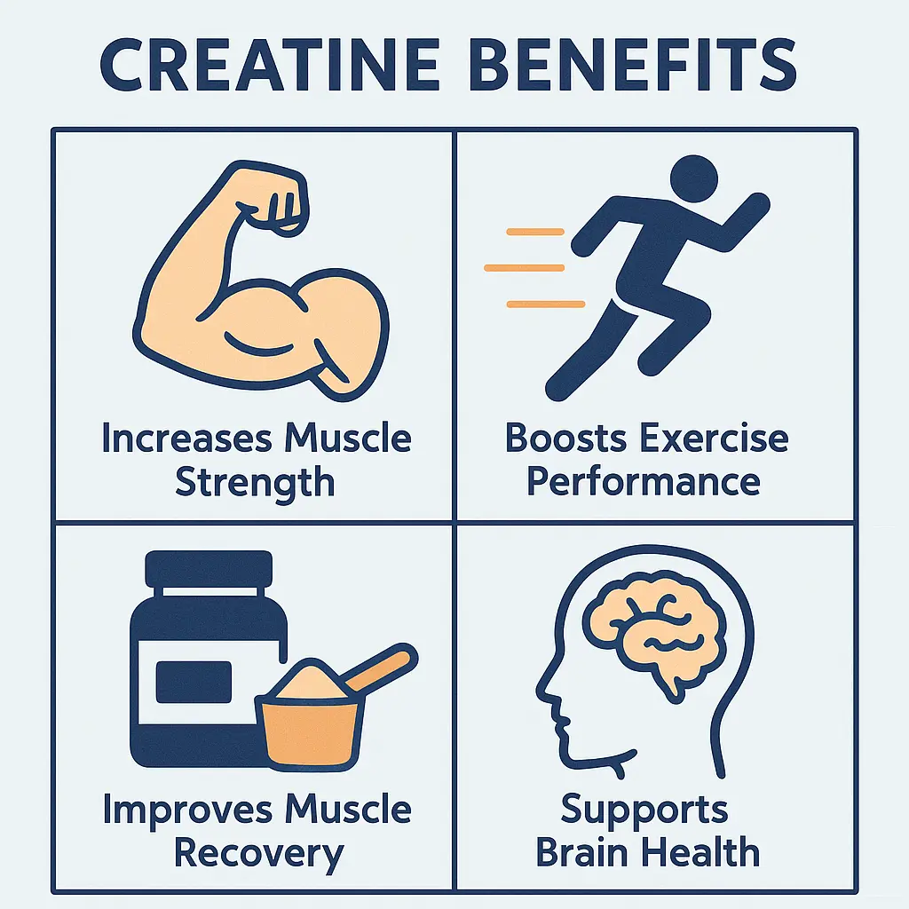

What is Creatine?
Creatine is a natural substance found mainly in muscle cells. It helps produce energy during high-intensity exercise. Many athletes use creatine supplements to improve performance and increase muscle mass.
Benefits of Creatine
- Improves strength and power in short bursts of exercise.
- Supports muscle growth by increasing water content in muscle cells.
- Enhances recovery after intense training sessions.
- May improve brain function and reduce fatigue.
Research from NIH confirms creatine’s effectiveness in boosting muscle strength.
How to Use Creatine
The common dosing method starts with a loading phase of 20 grams daily split into 4 doses for 5-7 days. Afterward, a maintenance dose of 3-5 grams daily keeps muscle stores saturated.
Mix creatine powder with water or juice. Take it consistently, especially on training days.
Possible Side Effects
Creatine is generally safe for most people when taken as recommended. Some may experience mild side effects like stomach upset or water retention.
Consult a healthcare provider before starting creatine if you have kidney issues or other medical conditions.
Common Mistakes People Make
- Skipping the loading phase and expecting immediate results.
- Not drinking enough water while using creatine.
- Using low-quality supplements without verified ingredients.
- Assuming creatine is only for bodybuilders, ignoring its benefits for other athletes.
Frequently Asked Questions
Is creatine safe to use daily?
Yes. Research supports daily creatine use as safe for healthy adults when taken within recommended doses.
Can creatine help with weight loss?
Creatine primarily helps build muscle and strength. It does not directly cause weight loss but may support fat loss when combined with exercise.
Do I need to cycle creatine?
There is no strong evidence that cycling creatine is necessary. Continuous use at maintenance doses is common and effective.